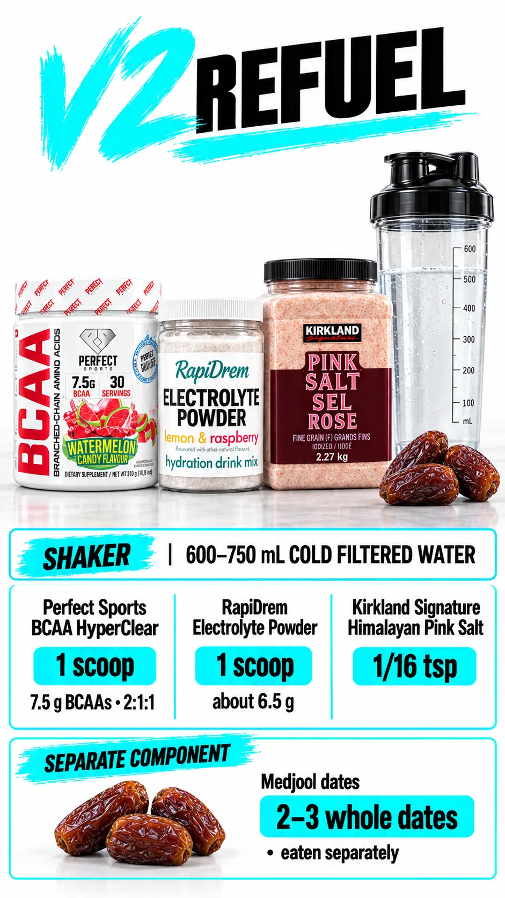
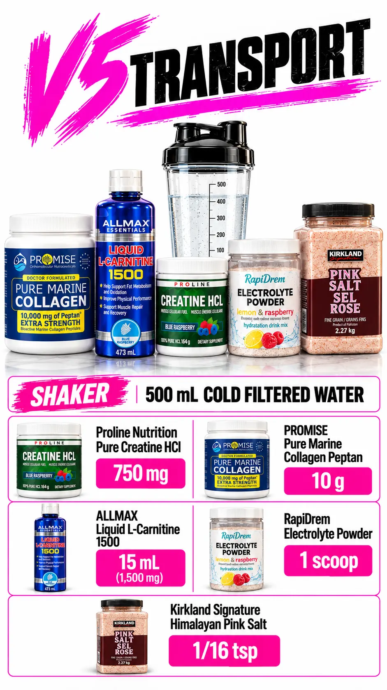
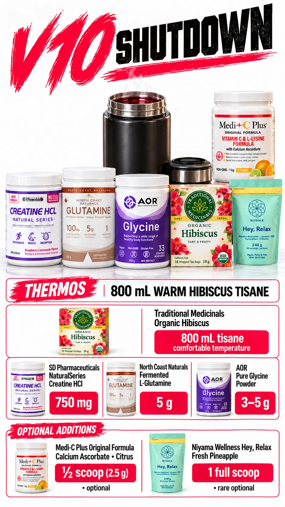
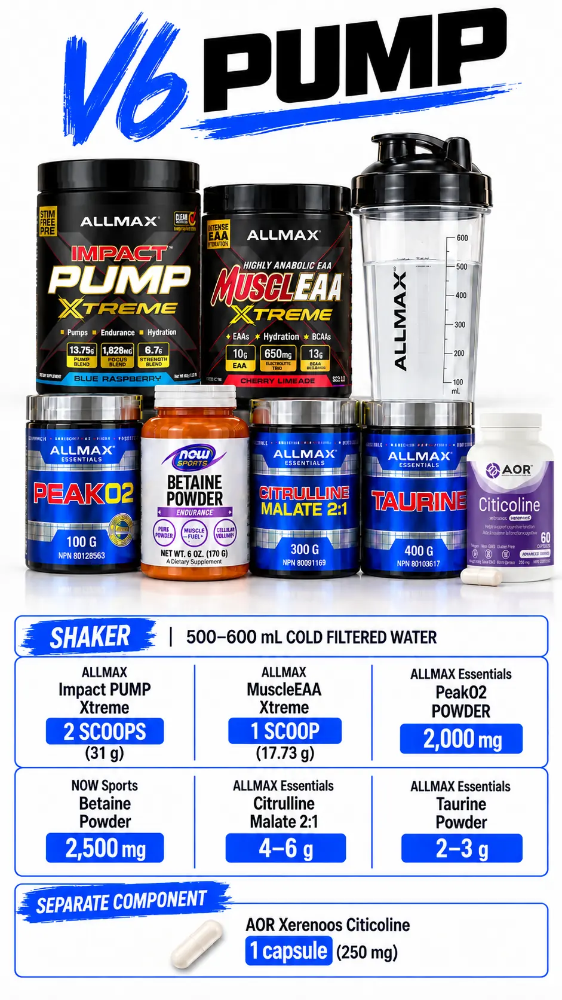

Liquid Intake
The Vector System — 7 Daily Protocols
- 7Vectors
- 3States
- 06:00First Dose
- 18:30Last Dose
Vector gallery
7 posters · tap to enlargeVector files
FILE 01V3 RECOVERY
Daily anchor; optional when consumed on rest days
Morning protein
Carnivor: 1 Canadian scoop / 33.9 g (23 g protein; no added creatine). PROMISE marine collagen 10 g. Rootalive black maca 5 g. ALLMAX L-carnitine 15 mL / 1,500 mg. Water. Separate: one gummy and NAKA Mint Vital Greens 20 mL.
V3 RECOVERY Cold filtered water; shaker volume unspecified
Clinical notes · five lenses
- Mechanism
- 23 g beef protein, 10 g marine collagen, 1.5 g free carnitine, whole-food ascorbate. Canadian Carnivor panel: zero added creatine. Greens taken as separate 20 mL flush.
- Stack interaction
- Magnesium 341-646 mg + high- dose vitamin C + continuous bile trickle — Loose stools are predictable system output; log and moderate fat bolus before blaming single foods.
- Margin
- Supplemental magnesium: training baseline 341 mg; up to 646 mg with options, versus 350 mg/day supplemental UL. Rest totals are lower and not fully quantified.
- Monitor
- Stool, pain, weakness, sleep and performance noted; options marked as taken or skipped.
- Stop rule
- Recurrent watery stools with weight loss, oily stools or significant abdominal pain: stop and seek assessment.
Encyclopedia V2.0 · Part III · Parts IV–VI · Annex II · Read the source cascades


 FILE 02
FILE 02V1 IGNITION
Morning training only (State A)
V1 IGNITION · current record
Morning training only
ALLMAX Impact Igniter Xtreme 2.0: 2 scoops / 28 g. ALLMAX MuscleEAA: 1 scoop / 17.73 g. ALLMAX PeakO2 2,000 mg. NOW betaine 2,500 mg. Citrulline malate 2:1: 4–6 g. Taurine: 2–3 g. Cold filtered water: 500–600 mL. Citicoline 250 mg is a separate capsule.
V1 IGNITION 500-600 mL cold filtered water
Clinical notes · five lenses
- Mechanism
- About 373 mg total caffeine, 10.67-12 g active citrulline base, 3.2 g beta-alanine, 2 g PeakO2 mushrooms, 2.5 g betaine. Spaced about 2 hours post- breakfast tea.
- Stack interaction
- IGNITER about 373 mg caffeine + TeaCrine (theacrine half-life 16-20 h) + Dynamine + theobromine + Earl Grey 40-70 mg — Exposure regularly crosses the 400 mg/day guidance; sleep is the limiting organ.
- Margin
- IGNITER about 373 mg caffeine before tea; with tea about 413–443 mg versus Health Canada 400 mg/day guidance.
- Monitor
- Sleep duration and awakenings; session RPE and performance.
- Stop rule
- Palpitations, fainting or sleep disruption that does not resolve when caffeine is pulled earlier.
Encyclopedia V2.0 · Part III · Parts IV–VI · Annex II · Read the source cascades



FILE 03V2 REFUEL
During the training session (States A and C)
V2 REFUEL · current record
During training
BCAA Hyper Clear: 1 scoop / 7.5 g BCAA, 2:1:1. RapiDrem: 1 scoop, approximately 6.5 g. Kirkland Himalayan pink salt: 1/16 tsp. Water: 600–750 mL. Two or three Medjool dates are separate food.
V2 REFUEL 600-750 mL cold filtered water
Clinical notes · five lenses
- Mechanism
- 3,750 mg leucine-led BCAAs, 1,000 mg potassium, 100 mg magnesium, about 36-54 g fast carbohydrate from dates.
- Stack interaction
- Magnesium 341-646 mg + high- dose vitamin C + continuous bile trickle — Loose stools are predictable system output; log and moderate fat bolus before blaming single foods.
- Margin
- Supplemental magnesium: training baseline 341 mg; up to 646 mg with options, versus 350 mg/day supplemental UL. Rest totals are lower and not fully quantified.
- Monitor
- Stool, pain, weakness, sleep and performance noted; options marked as taken or skipped.
- Stop rule
- Recurrent watery stools with weight loss, oily stools or significant abdominal pain: stop and seek assessment.
Encyclopedia V2.0 · Part III · Parts IV–VI · Annex II · Read the source cascades


 FILE 04
FILE 04V4 RELOAD
After the workout (States A and C); R-ALA remains separate
V4 RELOAD · current record
After training
BioSteel Recovery Protein Plus: 1 scoop / 36 g, half the listed full serving. Rootalive beetroot 7 g. Proline Nutrition creatine HCl 750 mg. Kirkland Himalayan pink salt: 1/16 tsp. Room-temperature water: 350–450 mL. AOR R-lipoic acid: one whole 300 mg capsule, separate before the drink.
V4 RELOAD 350-450 mL room-temperature water
Clinical notes · five lenses
- Mechanism
- Scaled half-serving: 12 g protein, 19 g carbohydrate, 125 kcal. Dietary nitrates from beetroot combine with creatine HCl. R-ALA swallowed whole; emptying into the shake risks mucosal irritation and degradation.
- Stack interaction
- R-ALA 300 mg + glycogen- depleted training + only 19 g carbohydrate in V4 — Hypoglycaemia symptoms post- training need glucose awareness, not stimulant escalation.
- Margin
- R-ALA 300 mg training days; no UL established. V4 is one 36 g half-serving, with 19 g carbohydrate.
- Monitor
- Recurrent sweating, tremor or confusion after training.
- Stop rule
- Recurrent sweating, tremor or confusion after training: stop and seek assessment.
Encyclopedia V2.0 · Part III · Parts IV–VI · Annex II · Read the source cascades



FILE 05V5 TRANSPORT
Rest days only (State B)
V5 TRANSPORT · current record
Rest day, when consumed
Proline Nutrition creatine HCl 750 mg. PROMISE marine collagen 10 g. ALLMAX L-carnitine 15 mL / 1,500 mg. RapiDrem: 1 scoop. Kirkland Himalayan pink salt: 1/16 tsp. Cold water: 500 mL.
V5 TRANSPORT 500 mL cold filtered water
Clinical notes · five lenses
- Mechanism
- Rest-day bridge: second daily creatine pulse (750 mg), 10 g connective-tissue peptides, carnitine and electrolytes.
- Stack interaction
- Magnesium 341-646 mg + high- dose vitamin C + continuous bile trickle — Loose stools are predictable system output; log and moderate fat bolus before blaming single foods.
- Margin
- Supplemental magnesium: training baseline 341 mg; up to 646 mg with options, versus 350 mg/day supplemental UL. Rest totals are lower and not fully quantified.
- Monitor
- Stool, pain, weakness, sleep and performance noted; options marked as taken or skipped.
- Stop rule
- Recurrent watery stools with weight loss, oily stools or significant abdominal pain: stop and seek assessment.
Encyclopedia V2.0 · Part III · Parts IV–VI · Annex II · Read the source cascades



FILE 06V10 SHUTDOWN
Night anchor across all three states
V10 SHUTDOWN · current record
Night
SD Pharmaceuticals Natural Series creatine HCl 750 mg. North Coast Naturals glutamine 5 g. AOR glycine 3–5 g. Traditional Medicinals hibiscus tisane: 800 mL, at a comfortable drinking temperature, in an insulated thermos. Optional: Medi-C 2.5 g; Hey Relax is a rare add-on. Confirm the current Medi-C formulation before using its label totals.
V10 SHUTDOWN 800 mL Traditional Medicinals Hibiscus Tisane, comfortable temperature
Clinical notes · five lenses
- Mechanism
- Nocturnal recovery: second creatine pulse, 5 g glutamine, 3-5 g glycine. Optional Medi-C adds 1,000 mg vitamin C and 105 mg magnesium; Hey Relax adds 200 mg magnesium and 1,000 mg inositol. The old 60-65 degree Celsius heating rule is retired.
- Stack interaction
- Magnesium 341-646 mg + high- dose vitamin C + continuous bile trickle — Loose stools are predictable system output; log and moderate fat bolus before blaming single foods.
- Margin
- Supplemental magnesium: training baseline 341 mg; up to 646 mg with options, versus 350 mg/day supplemental UL. Rest totals are lower and not fully quantified.
- Monitor
- Stool, pain, weakness, sleep and performance noted; options marked as taken or skipped.
- Stop rule
- Recurrent watery stools with weight loss, oily stools or significant abdominal pain: stop and seek assessment.
Encyclopedia V2.0 · Part III · Parts IV–VI · Annex II · Read the source cascades



V6 · EVENING OVERRIDEV6 PUMP
Evening training only (State C); replaces V1
V6 PUMP · current record
Evening training; replaces V1
ALLMAX PUMP Xtreme: 2 scoops / 31 g. ALLMAX MuscleEAA: 1 scoop / 17.73 g. ALLMAX PeakO2 2,000 mg. NOW betaine 2,500 mg. Citrulline malate 2:1: 4–6 g. Taurine: 2–3 g. Cold filtered water: 500–600 mL. No added caffeine, creatine or pink salt; total sodium is not established as zero. Citicoline 250 mg is separate.
V6 PUMP 500–600 mL cold filtered water
V6 source notes & deployment rules
- Recorded branch
- State C: evening training override, documented 5 October 2026.
- Exclusion
- V1 and V6 are never used on the same calendar day. Both are inactive on rest days.
- Shaker exclusions
- No added salt or creatine HCl; the source records a stimulant-free PUMP base.
- Companion routing
- V2 remains intra-session; V4 moves after the evening workout; V5 is inactive; V10 remains the night anchor.
- Source limit
- This reproduces the supplied formulation and branch rules. Ingredient effects, product-label subcomponents and safety guarantees are not independently established here.


- V1 Ignition (06:00): Morning adrenergic drive — Igniter Xtreme + EAAs + PeakO2. The launch sequence.
- V2 Refuel (09:30): Intra-workout — BCAAs + electrolytes + dates. Fuel during the session.
- V3 Recovery (04:00): Morning priming — beef protein + collagen + maca. Actually taken before V1 (04:00).
- V4 Reload (11:00): Post-training — R-ALA + recovery protein + creatine. The anabolic window.
- V5 Transport: Nutrient delivery vector (see individual page).
- V6 Pump (Evening): Stim-free — Pump Xtreme + creatine + betaine. Dormant since May 2026 but stays in canon.
- V10 Shutdown (18:30): Evening anchor — glutamine + glycine + collagen PM + hibiscus. Sleep preparation.